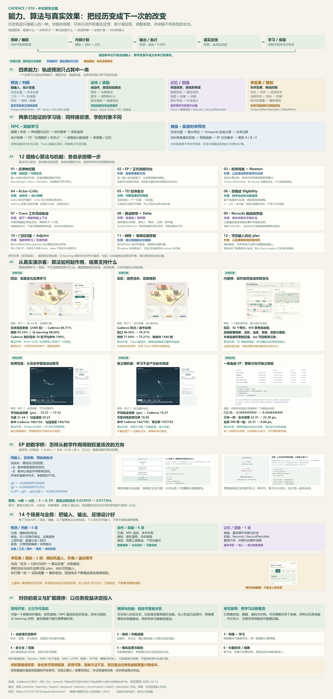

给输入，估计答案
历史位置 → 未来位移
工况特征 → 下一段读数
数值特征 → 类别或数值
讨论汇总 / 先看任务，再看机制
Cadence 可以探索“根据输入预测数值”“根据反馈选择动作”“保留线索与结果”“学习动作后果，再规划控制”。历史轨迹是输入的一种，EP 是学习参数的一种方法；它们都不代表整个库。
一张研究总图 / 九张已有网页实拍
按能力 → 学习链 → 算法职责 → 真实效果 → 业务与扩展的顺序阅读。截图旁的数据范围与结论分别注明；业务候选与本地实测分开。完整图为 3200×6700，可打开原图放大；SVG 中九处截图可进入对应演示。

历史位置 → 未来位移
工况特征 → 下一段读数
数值特征 → 类别或数值
局势 → 去哪家店
状态 → 宠物做什么
表现 → 选哪个难度档
刚看过的路牌 → 后续活动
线索 + 结果 → 快速关联
部分字段 → 记录补全
状态 + 动作 → 后续状态
当前状态 + 目标 → 控制序列
执行测量 → 重新规划
这一页是一份能力与实验设计地图。三类本地场景已有模型运行；其他业务明确标为候选或上游示例。下方五步交互只展开说明，不训练模型、不调用服务、不生成业务成绩。
回查输入、模型、目标、学习方法的四个层次 ↗这些是机制的分组，不是 12 个互斥产品。一个 NPC 可以同时用神经图、EP 风格参与量、Actor–Critic、TD、资格迹和联想记忆；一个预测器也可以同时用时序状态与 EP。
固定版本还导出唤醒调节 Arousal、状态与参数保存恢复、TemporalMemory 约束、Steered / Life / Governor 组合、观察者与多 Patch 端口组合等。它们影响何时计算、如何组合或如何续跑，不应都当成一种新学习算法。更深组合和实验分区有各自契约；本页没有逐一运行验证这些接口。
学习率、β、衰减、归一化、阻尼和迭代预算也是配置 / 数值策略。它们影响实际训练与成本，不自动增加语义理解、预测信息或业务价值。
查看完整 API 目录 ↗想解决什么？输入是什么？输出是什么？反馈从哪里来？能带来什么价值？简单对照是什么？什么时候会失败？先选一个场景逐步看闭环，再展开下面的完整设计。
每项都有最小验证方案与边界；“候选”表示值得设计实验，尚不能当成已交付业务。
位置历史 → TemporalPatchNet 预测 → 游戏的弹道 / 碰撞算法决定射击 → 实际位置评分。当前命中不是用奖励学射击策略；如果再接 Brain 选射击时机，那是另一项需要独立验证的实验。
应用先提供需求状态与允许行为，再由 Brain 选择并接真实反馈；Trace 保留近期活动，联想矩阵记录数值关系。动作差异是否让体验更好，要用目标指标与用户评价另测。
先用执行后的真实状态训练后果模型，再用 plan 优化控制输入。训练改模型参数，规划改候选动作；两者不能混成“规划时把想要的结果学成事实”。
模型预测正常读数 → 新测量到达 → 应用算偏差并校准阈值 → 人工 / 独立标签确认。库提供预测或内部状态，业务负责异常含义与提示条件。
如果接入 LLM：它可负责文字理解、任务拆解和工具参数；Cadence 可承担一个数值预测或有限动作模块。模块间数据、奖励、执行和来源仍由应用管理。当前站点没有实现这项集成。
| 问题条件 | 先比较什么 | Cadence 值得探索的点 |
|---|---|---|
| 结果可以直接由规则算出 | 脚本、几何、规则控制 | 规则无法覆盖的持续适应；仍要证明增量收益 |
| 状态与动作很少，奖励清晰 | 规则、表格 Q-learning | 可检查的局部学习与记忆研究；现有 NPC 未胜出 |
| 动作一次执行，结果即时独立 | 效用打分、上下文 bandit | 有限选项适应的候选；无需强行增加长期价值模型 |
| 运动短时近似平滑 | 匀速 / 匀加速度 / 转弯模型 | 重复的非线性响应或模式联系 |
| 测量噪声与隐藏状态突出 | Kalman / EKF / UKF、合适的状态估计 | 受控证据修复与动作条件模型对照 |
| 模式切换或非高斯估计 | IMM、多模型、粒子滤波等外部路线 | 学习模式间联系；先定义生成模型与评估 |
| 数值序列中有重复结构 | 简单回归、GRU / LSTM、同预算序列模型 | 时序 EP、状态与局部机制的可检查实验 |
| 需要精确查过去事实 | 数据库、日志、缓存 | 近似关联 / 补全的研究，不替代事实来源 |
| 未来存在多个合理分支 | 多候选 / 分布输出，并检验校准 | 扩展输出设计；当前捕鱼只有点轨迹 |
规则、Q-learning 和匀速 / 匀加速度是本项目的对照实现；其他路线只在指南中讨论，没有全部接入。Q-learning 解释外部方法与来源 · 上下文 bandit：情境、动作、已选动作反馈
决定采用的依据应是：留出任务误差 / 回报、变化后恢复速度、旧知识保留、总耗时与内存。只有能学习或只有内部残差小，不能证明业务上值得用。
| 本地任务 | 实际观测 | 可支持的结论 |
|---|---|---|
| 四店奖励反转 | Cadence 86.71%，规则 99.33%，Q 88.00%；各阶段末 50 轮 Cadence 平均 100% | 能持续再学习；这个简单任务规则更快 |
| 街区线索 / 多步奖励 | 街口 + 终点 Cadence 40.56%；加途中反馈到 74.31% | 反馈设计影响学习；未证明总体优势 / Trace 收益 |
| 有惯性的随机鱼 | 误差 75.57→17.72 px；匀速 21.34、匀加速度 20.25 | 能学部分重复结构并用于留出鱼；没有一般模型排名 |
| 实际射击 | Cadence 189/192，匀加速度 190/192 | 预测指标与业务指标必须分别检查 |
| 独立随机鱼 | Cadence 19.27，零位移 18.60 px | 神经模型不创造缺失信息；简单方法仍可能更好 |
| 一条训练鱼的 EP 更新 | 全部参数更新后该点误差 22.31→8.84 px | 解释一次参数变化；训练样本改善不能当新鱼效果 |
前三种场景的固定多种子数据是开发研究，尚无独立确认集或统计显著性结论。本轮网页汇总没有重新训练或改动这些成绩。新业务没有新增运行结果。
只选一个：预测一个数、选一个动作、读一个关联或规划一个控制序列。列出成功指标与能接受的延迟。
写下每个字段的含义、单位、时间戳、尺度与缺测方式。只提供当时可知信息；一组全零不自动代表“未知”。
监督给真实答案，奖励给执行结果。行动、回合、结果 ID 对齐；晚到结果只结算一次。想象与教学状态不进入事实记录。
同一输入、同一反馈、同一允许动作；匹配数据划分与计算预算。先确认最近值、规则或物理模型是否已经足够。
监督序列选 TemporalPatchNet 候选；有限动作选 Brain 候选；近似记录与证据修复有独立模块契约。不要把所有状态都称为“记忆”。
检查形状、有限值、求解资格、updated / 接受结果。一次失败计算不是一次已接受学习；检查的是模块实际返回契约。
按独立对象、轨迹、会话或设备划分，记录旧任务保留与新环境恢复。生产续跑需保存参数、活动、记录、优化器和随机状态等完整组成；本项目未实现会话恢复导入。
import numpy as np from cadence import Brain brain = Brain.compose(4, 2, modules=(16,), seed=7, arousal=True) observation = np.zeros((1, 4)) action = brain.live(observation) # 应用执行 action，收集 next_observation 和 reward next_action = brain.live(next_observation, reward=[reward]) # reward 属于上一真实动作；回合与延迟控制看完整实现。
示意变量由环境提供；这不是脱离环境即可运行的完整业务。细分 act / wait / learn、decision_id 与终止处理请看街区实现。
下载街区闭环源码 ↓import numpy as np
from cadence import TemporalPatchNet
net = TemporalPatchNet(4, 8, 24, seed=7)
# train_features: (batch, 7, 4)
# true_displacements: (batch, 7, 24)，来自已采集轨迹
net.reset() # 清活动，保留已学参数
report = net.observe(train_features, true_displacements,
beta=.003, rate=5., backtrack=True)
if report.updated:
phase = net.imagine(test_features, state=np.zeros((test_batch, 8)))
if phase.converged:
predicted_displacements = phase.output
# test_features 不带未来答案；尺度与解码由应用负责。这些参数来自当前捕鱼研究，不是其他业务的默认建议。完整配置、训练 / 留出与碰撞都在源码；回溯接受某批训练损失变化不能保证留出改善。
下载捕鱼实验源码 ↓规划要先验证后果模型，再向 TemporalPatchNet.plan 提供 inputs、goal、controls 与 bounds。controls 声明哪些输入端口可改；执行与再次测量由应用完成。Records、RecordPatchNet 和 BeliefPatch 的字段 / 端口、写入和训练各有自己的接口，不能把 Brain 的几行调用直接套过去。
上游交互完整流程 ↗独立模块 API ↗可直接运行的是本站现有三个场景，使用 Python 本机服务；完整命令见 项目 README。本页讲解无需模型服务调用；仍无公开部署。
| 顺序 | 探索方向 | 需要看到的证据 |
|---|---|---|
| 1 · 现有场景加条件 | 更长时长、更多线索、未见组合、相同模型条件切换 | 新任务成功率 / 误差、恢复速度与旧条件保留 |
| 2 · 信息与模型消融 | 加操作输入；物理基线 + 学习偏差；关闭记忆 / 轨迹 | 相同预算下哪个信息或机制实际贡献收益 |
| 3 · 多分支与范围 | 多候选未来、任务权重与不确定性输出 | 覆盖、校准、漏报 / 误报；不能只画更多曲线 |
| 4 · 小业务离线原型 | 独立无人机日志、设备趋势或模拟宠物 | 按独立会话留出，强简单基线，完整成本 |
| 5 · 后果与规划 | 从一维模拟控制到更复杂受控环境 | 模型留出误差 + 实际执行到达目标，分别评分 |
| 6 · 记忆与长期运行 | 冲突事件、旧知识保留、完整存档与续跑 | 获取 / 干扰 / 恢复测试，以及重启后的状态一致性 |
对当前项目，直接价值是做可检查的学习实验：哪一步改变了回答、奖励到底影响了什么、强规则能否更便宜地做到同样效果。是否值得进入具体业务，需要这些实验的结果；目前未证明 Cadence 带来通用性能、低功耗或商业收益。
模块与公式来自固定上游文档和本地安装源码；场景卡片里的输入设计、业务价值与最小原型是本项目的应用推断。它们不是作者对全部业务的效果承诺。
Cadence 0.80.0 · GPL-3.0 · commit 19bee92756d1842176ad30b1cd01edbfbfa3f14c。此次扩充内容与导航，没有新增业务运行结果。